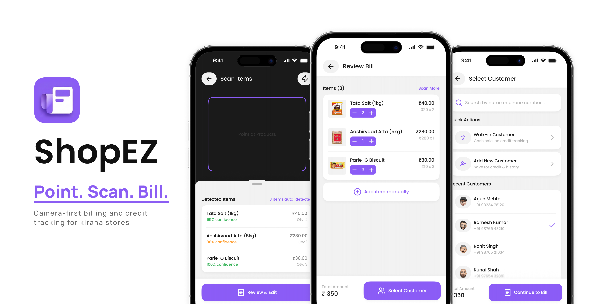
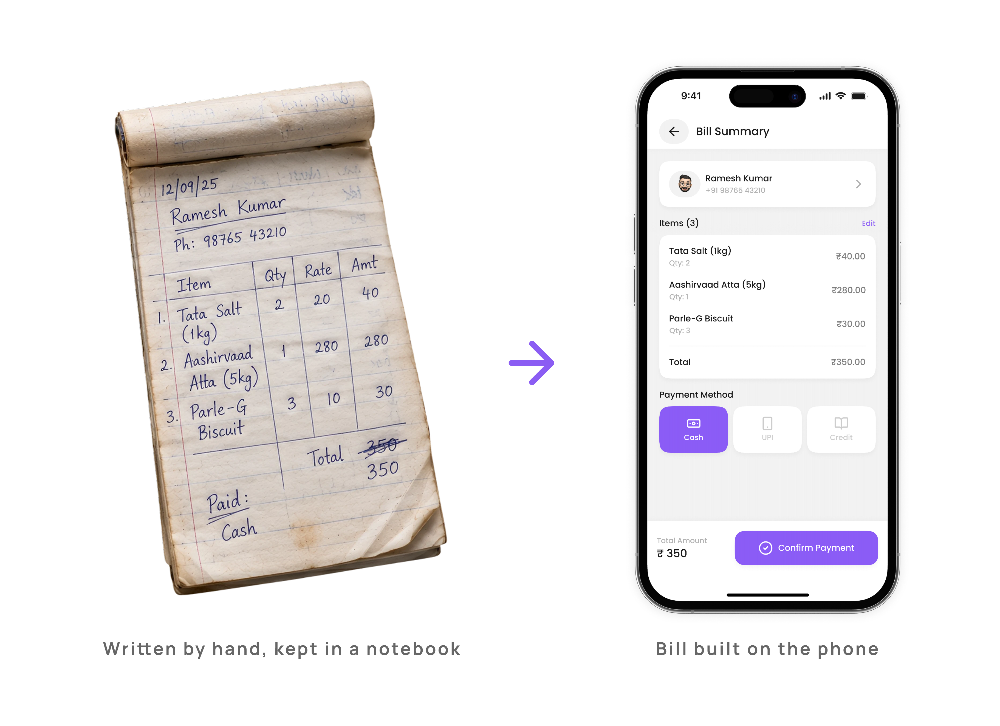
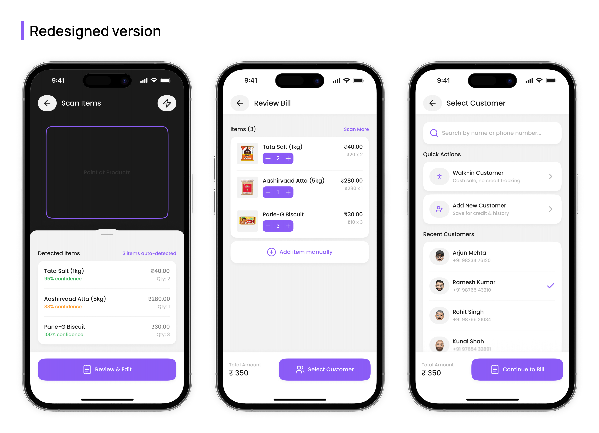
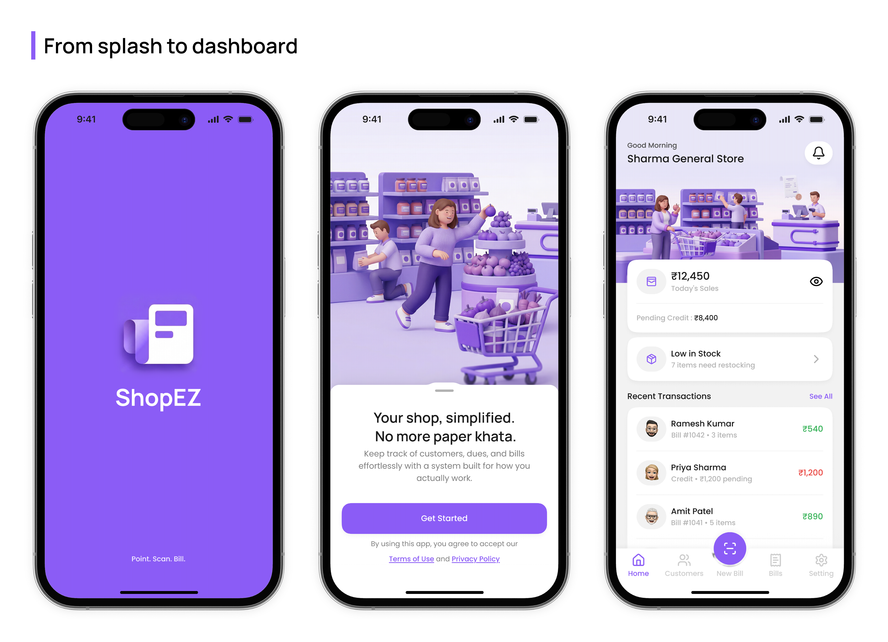
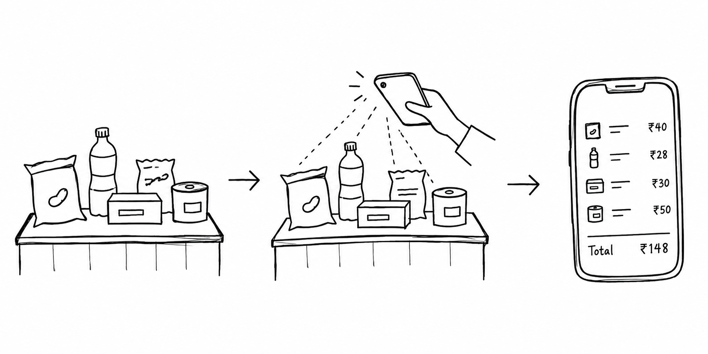
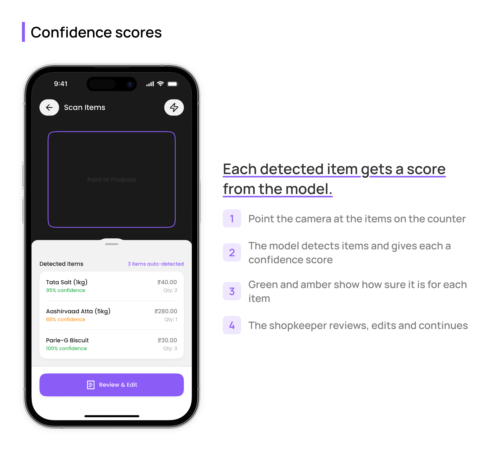
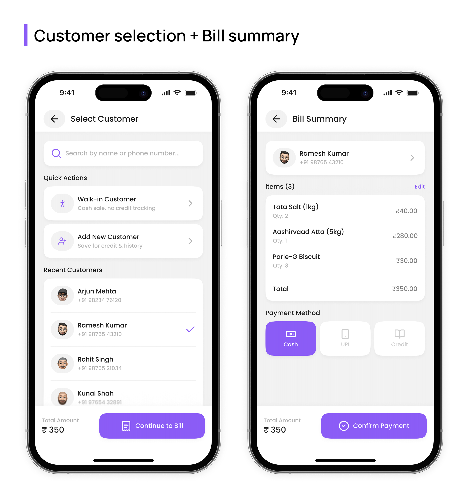
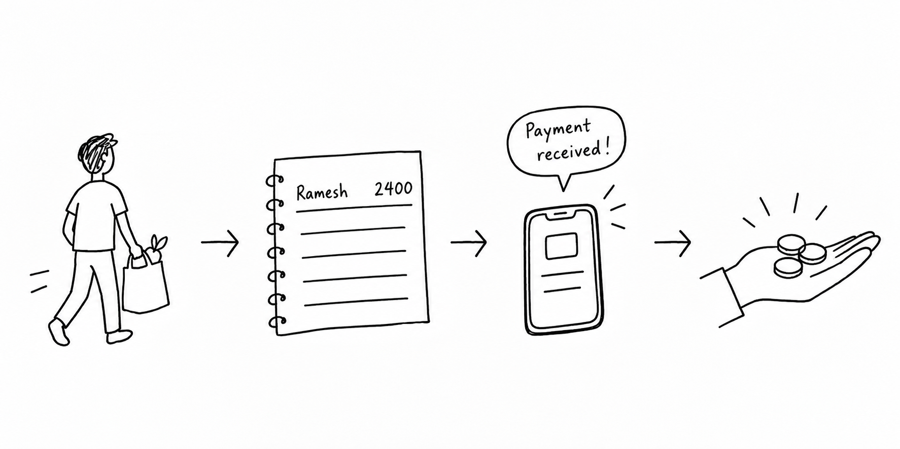
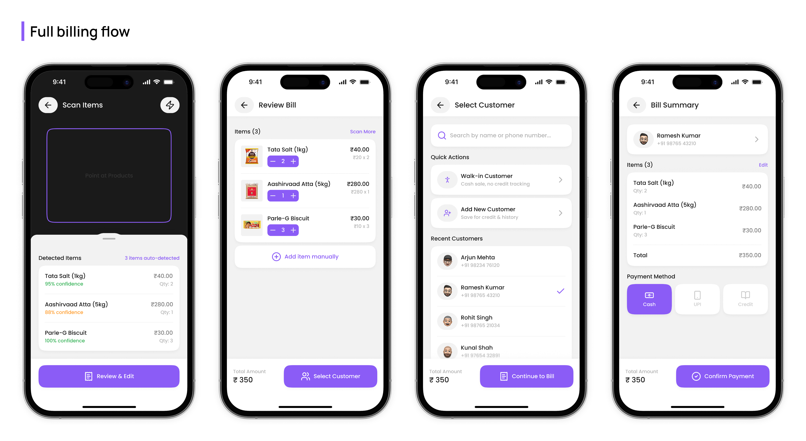

How I redesigned a hackathon billing app for the person actually standing behind the counter.
ℹA Quick Note
ShopEZ began as a team hackathon project and won the Best Innovation award. The core idea came from the team. At the hackathon I mainly shaped the UX and put together a basic UI under time pressure. Afterwards I redesigned the UI on my own, refined the UX, and contributed some Flutter front-end and UI refinement in code. The original was built with Flutter/Dart, Flask/Python, Supabase and YOLOv8-based item recognition through OpenCV. This page is about the redesign, and where something is a proposal or untested, I say so.

12M+ Kirana StoresIndustry estimates for India's neighbourhood grocery shops. There is no official count.
5 Core AreasSplash, onboarding, dashboard, scan-to-bill and credit management.
~30 Second BillsBest case in our own internal tests, not a validated result. Details in The Flow.
What ShopEZ Does
Kirana stores are India's neighbourhood grocery shops. Industry estimates put them at 12 million or more, and many still track bills and customer credit by hand.
At a busy counter, hands are full and time is short, so an app that needs a lot of typing, searching or menu-hopping is hard to use during a sale.
ShopEZ starts with the camera: place the items in view, the app recognises them, and the bill builds itself. Recognition runs on YOLOv8 through OpenCV, with a Flutter app, a Flask backend and Supabase behind it. It was built as a hackathon prototype.
Perspective
“At a busy counter the interface has to work around busy hands, not against them.”
Why It Matters
Why the paper system had to go. An illustration of one bill, written by hand and built in the app.

Here is what the problem rests on, and what it does not. I did not interview shopkeepers or run usability research. My understanding comes from watching a relative who runs a kirana store track transactions by hand, from web research, and from the team's own reasoning. Read it as one shop's view plus desk research, not as a study.
What I saw and read
What it costs
Bills written by hand
Slow, error-prone, hard to look back on
Credit kept in a notebook
Easy to lose, hard to chase
Reminders happen in person
Asking for payment feels awkward
Where It Started
The original app, built by the team over the hackathon, could scan items and generate a bill. That was roughly it. My part was the UX flow and a basic UI, drawn up quickly because the clock was running.
The home screen opened to a customer list with no business summary. Credit tracking was buried. The first screen asked users to choose between “Retailer” and “Customer,” a choice a shopkeeper-only tool never needed.
A year later I came back to it on my own: a full UI redesign, a second pass on the UX, and some Flutter front-end work to carry parts of it into code. The question I started from was simple:
Perspective
“What would this look like if it were designed properly for the person behind the counter?”
The redesign is mainly a UI and UX redesign. I carried some of it into Flutter, and the rest lives in the designs. I have not marked each feature as built or not, so treat it as a design-stage concept with partial implementation.


The Decision Journey
DECISION 01
Leading with the camera

At the counter the items are already in front of the shopkeeper. Searching a catalogue means typing and scrolling for every item, so the app starts from what is physically there: place the items in view, scan, and get a bill. In our tests we put several grocery items together and scanned them in one go.
The cost is that the whole flow depends on recognition. It worked best on packaged items and struggled with loose or unpackaged ones. That limit is why the next decision matters.
DECISION 02
Making the AI visible, not invisible
YOLOv8 returns a confidence score for every item it detects. Rather than hide it, the concept shows it per item: a 95% detection reads green and an 88% one reads amber, so the shopkeeper can tell which to glance at twice.
We tried a range of grocery items. Packaged goods were recognised more easily. Loose items were harder, and changed packaging could throw the model off. So every bill goes through a review step, and any item can be added manually, which also covers anything the model does not recognise.
The shortcut
What ShopEZ does
Hide the model’s confidence
Show a score per item
Send detections straight to the bill
Review the items before billing
Treat recognition as final
“Add manually” for misses and new packaging
Insight
The review step costs seconds, and those seconds are part of the roughly 30-second runs in The Flow. I kept it because a wrong item becomes a wrong bill, and on a credit sale a wrong ledger entry. Trust is bought with speed here, and I would rather spend the speed.

DECISION 03
The Walk-in Customer button
The first version asked for a customer on every bill, as if each sale belonged to a registered customer.
My assumption, from watching one store and not from data, was that plenty of sales are quick cash sales that do not need a customer record, and a lookup on every one is friction. So “Walk-in Customer” skips selection and goes straight to payment. Customers on credit still get the full flow, with recent customers at the top.
Payment offers cash, UPI and credit. Those three came from our own product reasoning, not from a payment-methods study.

DECISION 04
Words on a button
The bill summary screen originally ended with “Confirm Transaction,” which sounds formal and final, like a bank.
By that point the sale is already under way: it started a few screens earlier, when the camera scanned the first item. A confirmation step makes it feel like starting again. “Continue to Bill” says the work is nearly done. This was a judgement about wording, and I have not tested it with shopkeepers.
DECISION 05
Digitising udhaar without making it awkward

Udhaar is credit given on trust, usually written in a paper ledger called a khata. The shopkeeper often knows the customer personally, which makes asking for payment uncomfortable. The goal was to digitise those records and take some of that awkwardness out.
Feature
What it shows
Why it is there
Transaction timeline
Every bill and payment in order
A full history to point to if a balance is questioned
Running total
Paid in green, credit in red
One clear balance per customer
Send Reminder
Composes an SMS or WhatsApp message
The shopkeeper does not have to raise it in person
Insight
Reminders were not a finding from research. A judge at the hackathon suggested SMS and WhatsApp reminders, and we added them to the concept because they fit the problem.
The Flow

The billing flow in one strip: scan, review, select a customer, and settle the payment.
In our internal tests, a bill for a small basket took around or under 30 seconds in the best case: place the items, scan, pick a customer, correct anything the model got wrong, and generate the bill. That is my own repeated testing, not a validated result, and it is not a promise for a real shop.
Reflection
Test with real users earlier
My understanding came from watching one relative's store, web research and the team's reasoning. I ran no interviews or usability tests, so these decisions are informed hypotheses. Watching a shopkeeper use the scan screen would test the camera-first idea first.
Design the failure states
Manual entry covers unrecognised items and changed packaging. What is still missing are dedicated states for camera failure and no internet connection.
Language toggle from day one
The app is in English. Some shopkeepers may be more comfortable in Hindi or a regional language, so language support should have been in the first frame of the Figma file.